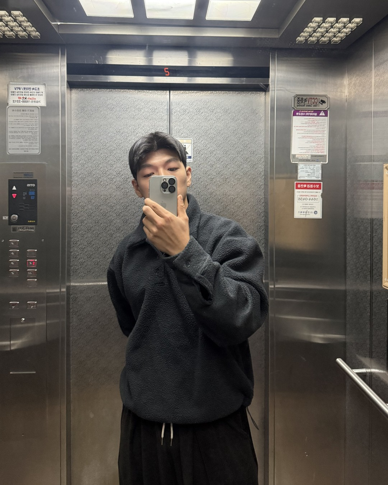
헤어진 남자가
다시는 안 돌아오는 경우 3
(기다리기 전에 먼저 보세요.)
1/14
@mszexc
넘겨보세요 →
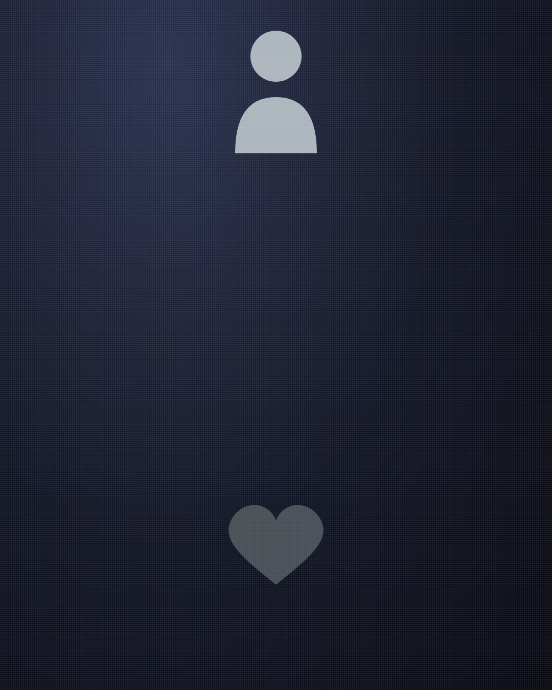
헤어진 남자는
생각보다 자주 흔들려요.
(그런데 이 세 가지면, 돌아오지 않아요.)
2/14
@mszexc
남자들끼리 하는 말 #66

첫 번째.
헤어지기 전에 이미 오래 정리했을 때.
(헤어지자는 말은, 정리가 끝났다는 신호였어요.)
3/14
@mszexc
남자들끼리 하는 말 #66
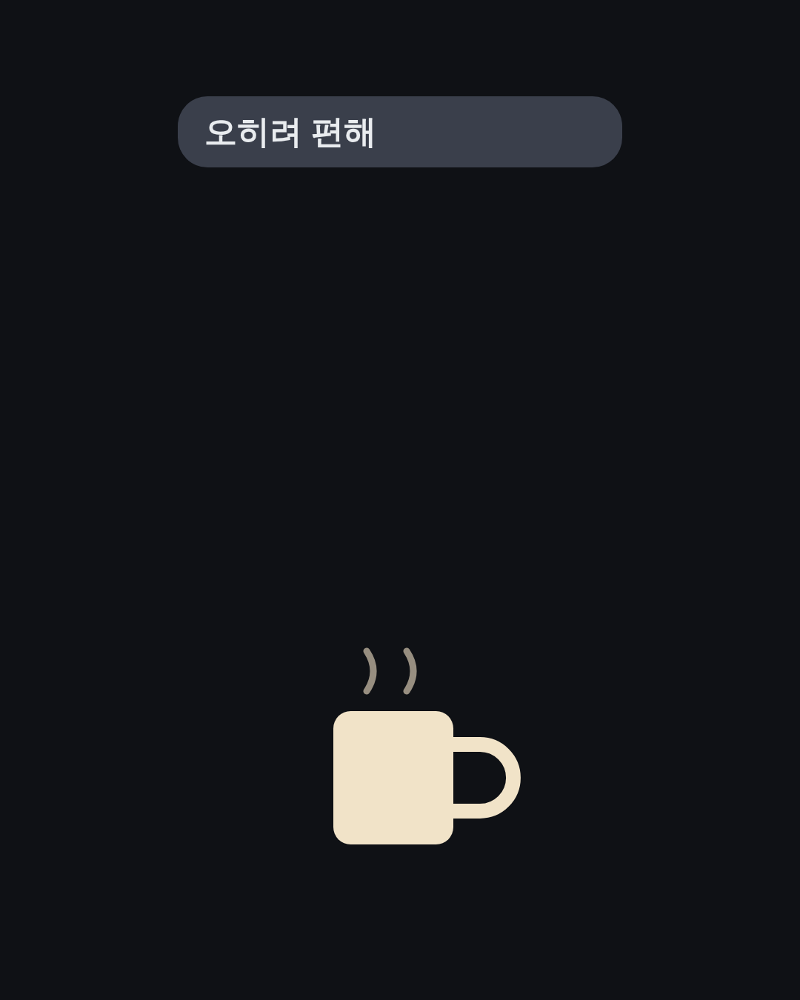
이럴 때 남자는
헤어진 날 오히려 편안해 보여요.
(슬픔은 헤어지기 전에 다 지나갔거든요.)
4/14
@mszexc
남자들끼리 하는 말 #66
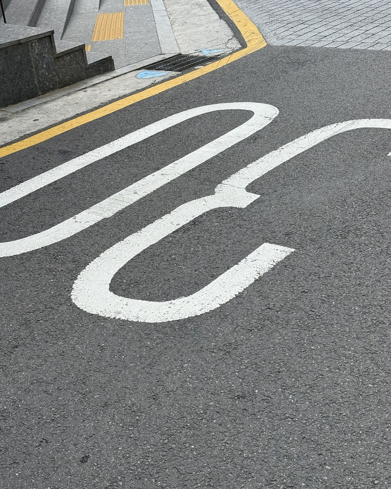
두 번째.
자존심을 크게 다쳤을 때.
(친구들 앞에서 무시당했거나, 다른 남자와 비교당했거나.)
5/14
@mszexc
남자들끼리 하는 말 #66
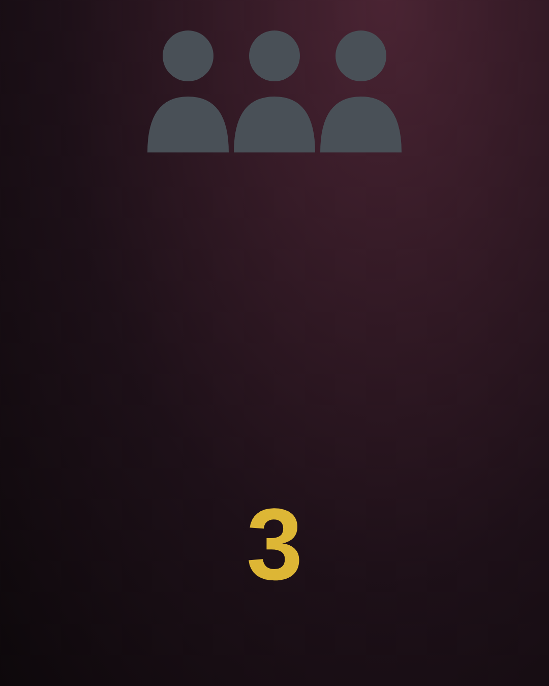
남자는
사랑보다 자존심이 오래 남아요.
(그 상처가 다시 연락할 손을 막아요.)
6/14
@mszexc
남자들끼리 하는 말 #66
세 번째.
같은 이유로 여러 번 헤어졌을 때.
(세 번째 이별엔, 남자도 더는 기대하지 않아요.)
7/14
@mszexc
남자들끼리 하는 말 #66
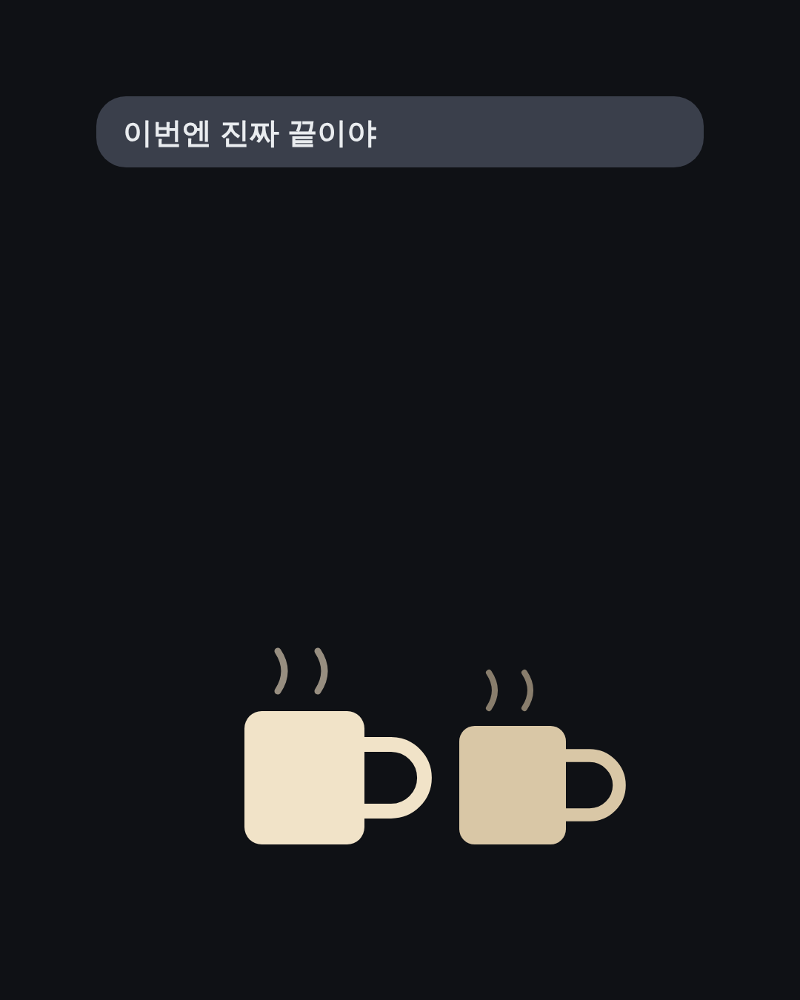
남자들끼리는 이렇게 말해요.
"이번엔 진짜 끝이야. 또 똑같을 거야."
(이 말이 나오면, 다시 돌아가지 않아요.)
8/14
@mszexc
남자들끼리 하는 말 #66
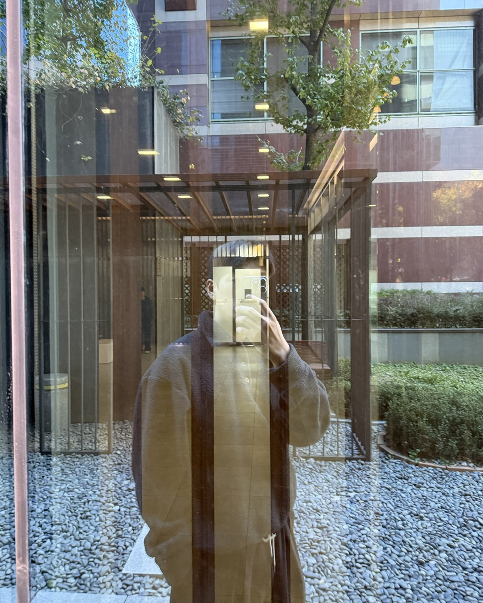
반대로 여지가 있는 남자는
헤어진 뒤에도 소식을 궁금해해요.
(스토리를 보고, 친구에게 안부를 물어요.)
9/14
@mszexc
남자들끼리 하는 말 #66
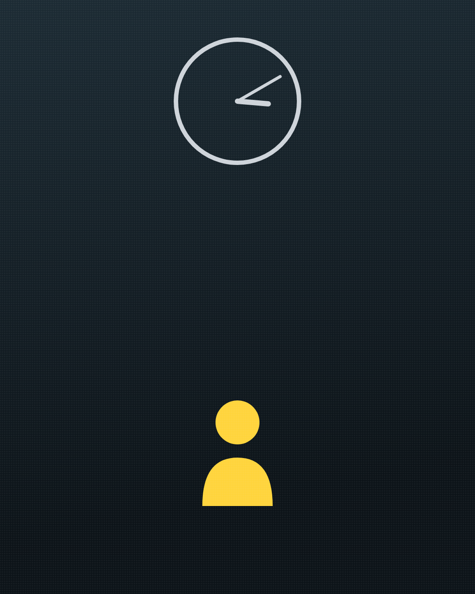
그래서 기다릴지 말지는
그의 미련이 아니라, 헤어진 이유로 보세요.
10/14
@mszexc
남자들끼리 하는 말 #66
세 가지 중 하나라면
기다리는 대신, 내 하루를 다시 세우세요.
(기다리는 시간도 나를 지치게 해요.)
11/14
@mszexc
남자들끼리 하는 말 #66
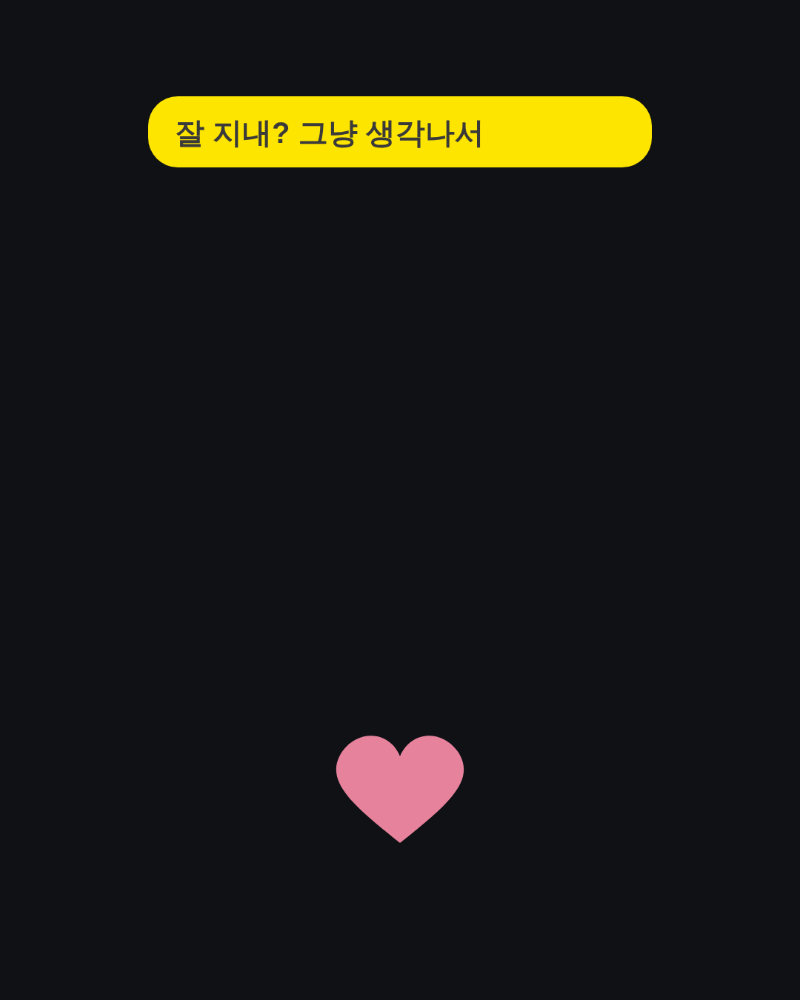
그래도 연락하고 싶다면
"잘 지내? 그냥 생각나서."
(딱 한 번. 답이 없으면, 그게 답이에요.)
12/14
@mszexc
남자들끼리 하는 말 #66
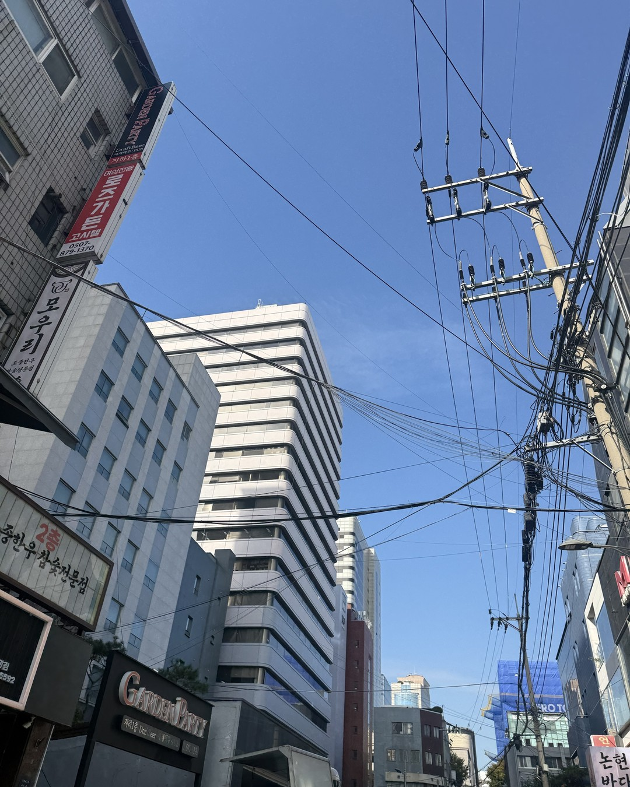
돌아오지 않는 남자를 기다리는 것보다
나를 기다리는 사람을 만나는 게 빨라요.
13/14
@mszexc
남자들끼리 하는 말 #66
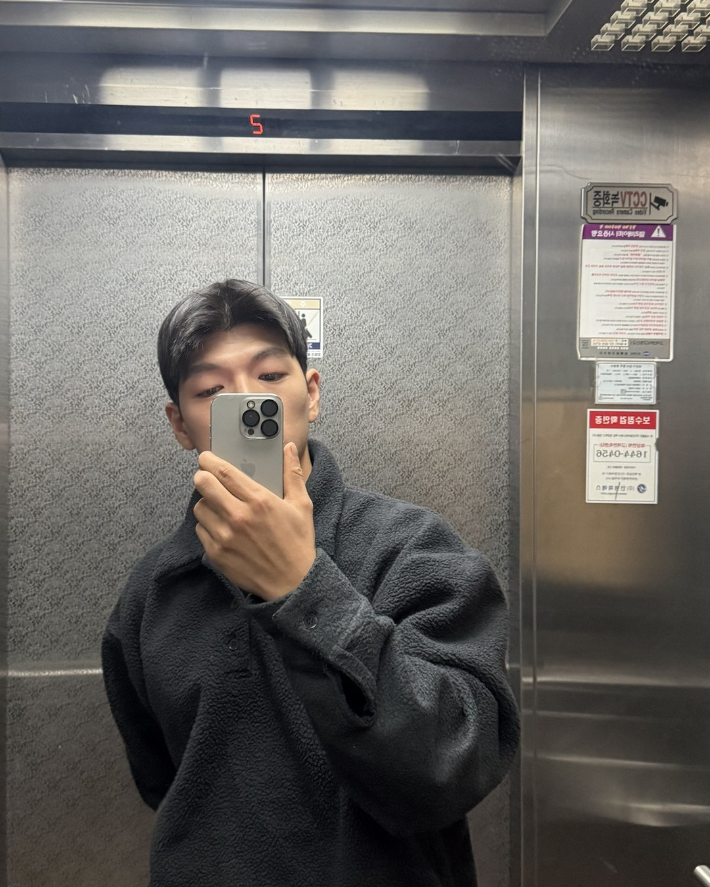
이것만 기억하세요.
안 돌아오는 건 당신 탓이 아니라, 이미 끝난 이유 때문이에요.
남자가 하는 말의 뜻은 전자책 1·2권에 · 프로필 링크에서 무료로 받아보세요
14/14
@mszexc
남자들끼리 하는 말 #66